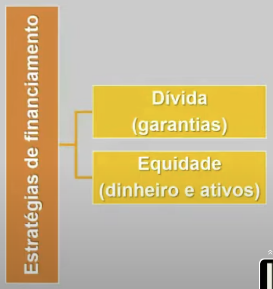
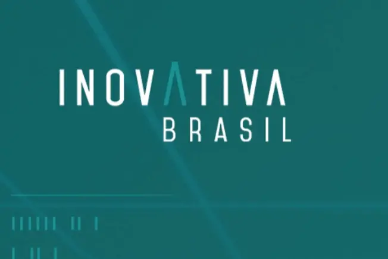
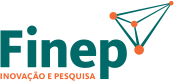
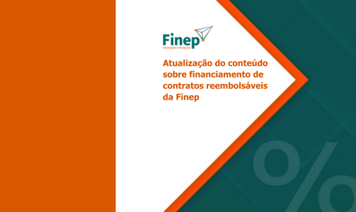
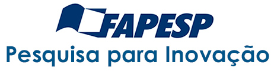

Disciplinas
GESTÃO DE INOVAÇÃO E DESENVOLVIMENTO DE PRODUTOS Concluído
Materiais
Vídeo 3 - Gestão da Inovação e Desenvolvimento de Produtos - Fontes de financiamento para projetos inovadores sendProfessor ministrante: Alexandre Aparecido Dias (Univesp)
Temas da aula
- Estratégias de capitalização para startups
- Fontes públicas de fomento à inovação
Tenho uma grande ideia, mas não tenho (muito) dinheiro para investir. O que fazer?
Estratégias de capitalização
- Economia pessoal, família e amigos
- Investidor-anjo (pessoa física)
- Fornecedores, clientes e funcionários
- Capital de risco (venture capital)
- Fontes públicas de fomento à inovação
ONDE BUSCAR APOIΟ PÚBLICO À INOVAÇÃO?
Prof. Dr. Marco Polli
Tipos Principais de Recursos:- Foco Não Financeiro
- Não-Reembolsável
- Reembolsável
- Retornável a partir do Êxito do Projeto/Negócio
Foco Não Financeiro:
- Acessos: ciclos com até 160 empresas selecionadas cada.
- Público-alvo: startups em tração ou operação.
- O que é oferecido: programa de aceleração online de 4 meses: mentoria, conexão, visibilidade.

Não-Reembolsável:
- Acesso: editais temáticos (Ex.: Covid-19).
- Público-alvo: empresas de vários portes que desenvolvam soluções aderentes ao tema do edital.
- O que é oferecido: recursos não-reembolsáveis (Edital 4.0: R$ 750 mil a 5 mi)

Reembolsável:
- Acesso: fluxo contínuo
- Público-alvo: empresas médias e grandes.
- O que é oferecido: empréstimos equalizados de longo prazo

Retornável a partir do Êxito do Projeto/Negócio:
- Acesso: fluxo contínuo (fase 1 e 2) e por chamadas (fase 3)
- Público-alvo: micro e pequenas empresas paulistas
- O que é oferecido: recursos de R$ 200 mil (9 meses) a 1 milhão (2 anos). Deverão ser devolvidos caso a inovação gere resultados financeiros.

Recomendações Finais
- Atenção ao público-alvo.
- Pesquisa sobre as obrigações e forma de acompanhamento.
- Busque parcerias.
Concluindo
- O que vocês podem fazer com o conhecimento que adquiriram na disciplina?
- Conduzir o processo de inovação
- Orquestrar uma organização voltada para a inovação
- "Turbinar" a criatividade para desenvolver novos produtos
- Transformar ideias em protótipos
- Elaborar um plano de negócios
- Modelar negócios
- Identificar fontes de financiamento